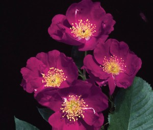
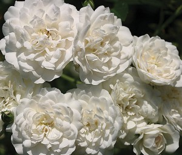

Landscape Roses
Tweet Follow @111iamtestThese are a modern category of rose developed mainly for mass planting. They are collectively known as shrub roses. In the late 20th century, traditional hybrid tea and floribunda rose varieties fell out of favor amid gardeners and landscapers, as they are often labor and chemical intensive plants susceptible to a myriad of pest and disease problems. So-called "landscape" roses have thus been developed to fill the consumers desire for a garden rose that offers color, form and fragrance, but is also low maintenance and easy to care for.

Purple Floorshow
This landscape rose was bred by Harkness, United Kindom. It is a beautiful continual blooming plant with plentiful, rich, and green foliage. It produces striking blooms, 10 to 12 petals each, of deep magenta/purple color, set off by very large, rich, deep golden centers. The rose possesses a wonderful fragrance. Purple Floorshow is ideal for many uses and a perfect match for other Floorshow roses.

Seafoam
This landscape rose was bred by Ernest W. Schwartz. It is a vigorous, continually blooming trailing rose that reaches 2 to 3 feet, and is covered continuously with masses of bloom. It has a dark-green, glossy foliage, and it covers itself with clusters of eye-catching, creamy-white, double blooms, 15 or more petals each. The rose possesses a slight fragrance, and can be served as a small climber or a ground cover. This rose is the first and still one of the finest landscape roses.